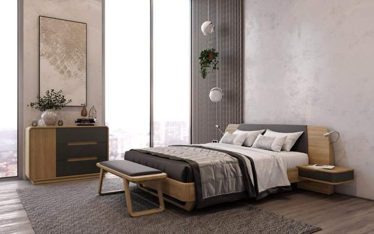

Услуга 3d моделирование предполагает точное представление элемента, изделия, строительного объекта в объемной форме разработки. Визуализация этих объектов широко используется, чтобы разрабатывать элементы, которые планируется внести в специальные брошюры и каталоги. Еще шире объекты визуализации используются в сфере маркетинга и рекламы, сюда же можно отнести и 3d моделирование квартиры. Несомненный факт, что модель заметно ускоряет проектирование. Изготовитель получает шанс наглядно продемонстрировать ту или иную деталь уже на момент проектирования, чему, конечно, будет рад заказчик, да и это даст ему уверенности в хорошем итоге. Именно эта причина обуславливает предпочтение заказчиков сотрудничать со специалистами, которых предоставляет студия 3d визуализации. Ведь только она может предложить осмотреть деталь и объект путем их трехмерной визуализации. В сегодняшнем мире технологии создания визуализации занимают высший уровень. Современные пакеты программ имеют способность создавать максимально приближенные к реальности вида деталей и единиц сборки. А имея в кармане фотореалистичную 3D картинку прорабатываемого изделия, которое еще только проектируется, можно сделать конкурентоспособность существенно выше в занимаемом рыночном сегменте. Кроме того, студия выполнит изготовление чертежей по моделям трехмерного формата, которые предоставляются заказчиком. А для этого понадобится знающий инженер и конструктор с достаточной квалификацией. Независимо от того, насколько сложные чертежи, задание, несомненно, выполнят. Кстати, один из существенных плюсов работы со студией – это обеспечение технической поддержки на протяжении всего конструирования, вплоть до сдачи его в эксплуатацию, если речь идет об объектах архитектуры, или до момента запуска на производство, если мы говорим о деталях. Как правило, лишь студия может гарантировать опытные работы в данной области, ведь это необычная услуга, немногие специалисты этой сферы добиваются значимого успеха. А эффективно работать на себя будут модели и реалистичные изображения, выполненные для абсолютно разноплановых объектов.
Практичным и распространённым способом визуализации дизайн-проекта стало использование 3d графических программ. Опытные модельеры быстро выполняют даже сложные задания с точным перенесением размеров и положений всех объектов. Для такой работы (рендеринга) обычно выбирается один или несколько ракурсов. В панорамном исполнении применяется эффект камеры с поворотом в 360°. На мониторе отображается камера, поворачивая которую можно «заглянуть за угол».